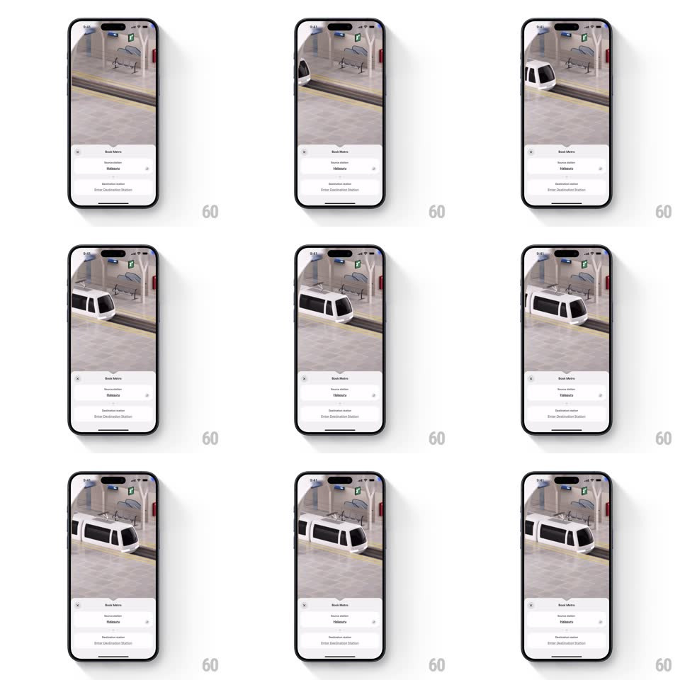

Media
Frame-by-frame

Rebuild this animation 1:1: Namma Yatri's metro booking - a 3D isometric station scene (platform, benches, signage) where a white metro train glides in from the left and docks at the platform above the "Book Metro" bottom sheet.

Rebuild this animation 1:1: Namma Yatri's metro booking - a 3D isometric station scene (platform, benches, signage) where a white metro train glides in from the left and docks at the platform above the "Book Metro" bottom sheet.
## Integration
Integration: stack-agnostic spec - springs given as stiffness/damping, timed motions as duration + curve; map every value to your framework and animation library of choice.
## Scene
Upper two-thirds: an isometric 3D station - tiled platform with a yellow safety line, bench, hanging signs, pillars. A white metro train with dark windows slides along the track. Bottom sheet: "Book Metro" header, "Source station" row (filled), swap icon, "Destination station" row ("Enter Destination Station").
## Motion spec
Pattern: train arrival loop, ~2s.
- Arrival: the train enters from the left at constant speed (500px/s), decelerating (ease-out, last 40% of travel) to a precise stop with doors at the platform markers.
- Idle: the train sits 1.2s with a subtle body settle (2px vertical, 300ms) and interior lights flicking on.
- Loop: the train departs right (accelerating, ease-in, 900ms) and the cycle repeats after a beat.
- Sheet: static and interactive throughout; dragging it up expands over the scene, the 3D view panning up slightly to compensate (200ms).
## Calibration
- The train stops at the same spot every loop - no drift between cycles.
- The scene's shadows move with the train (baked light, soft shadow under the cars).
## Reduced motion
The train fades in already docked; no loop.
## Don't miss
- Deceleration is the realism cue - no constant-speed stop.
- The sheet never animates with the train; the two planes stay independent.